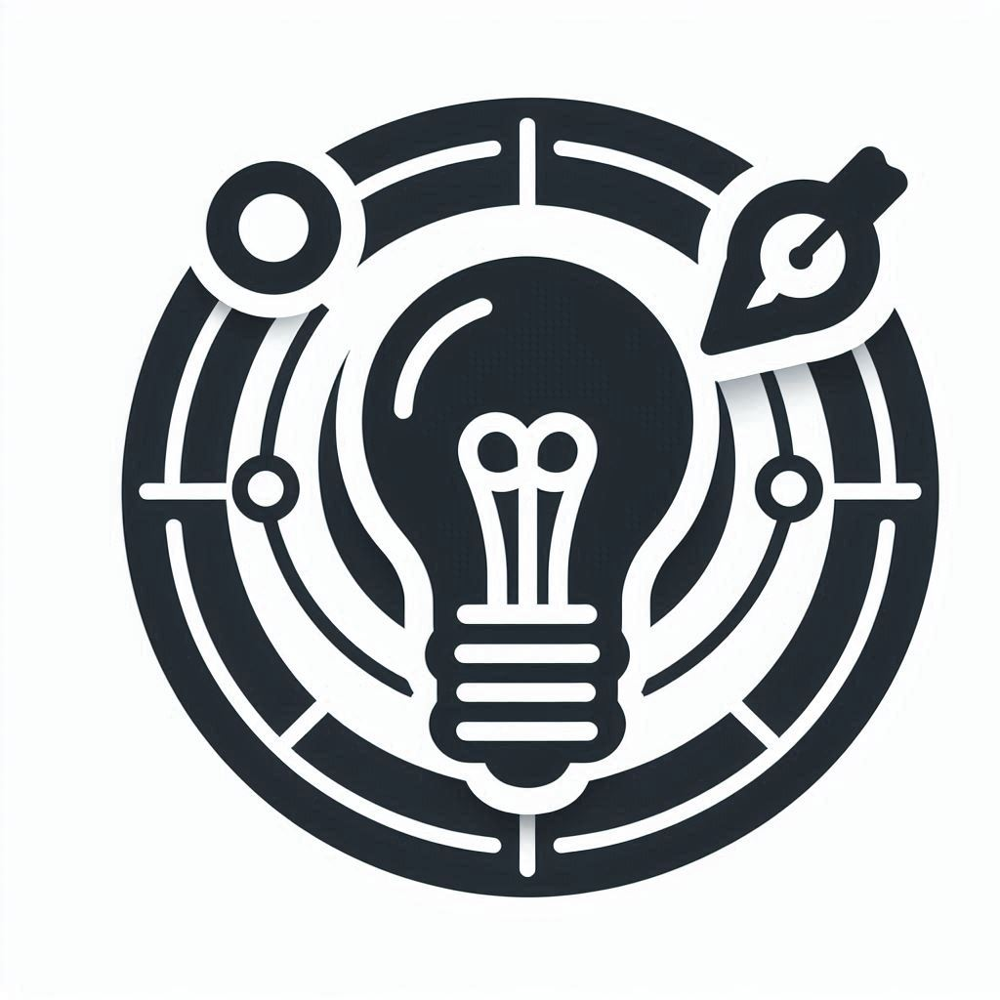

The Bachelor of Vocational Software Development and System Administration program is designed to provide students with the necessary skills and knowledge to pursue a career in software development and system administration. The program emphasizes hands-on learning and practical experience, preparing graduates to meet the demands of the rapidly evolving technology industry.
Mission

Our mission is to equip students with a comprehensive education in software development and system administration, fostering innovation, critical thinking, and problem-solving skills. We aim to create professionals who are ready to excel in the dynamic and competitive field of technology.
Vision

To be a leading department that offers top-notch education in software development and system administration, producing graduates who are well-prepared to contribute to and lead in the global technology landscape.
Objective

The objective of the Bachelor of Vocational Software Development and System Administration program is to provide students with a solid foundation in software engineering principles, system administration techniques, and real-world application development. We aim to develop professionals who are capable of designing, implementing, and managing complex software systems.
Programme Outcomes
- Gain proficiency in various programming languages and software development tools.
- Develop skills in system administration, including the management of servers and networks.
- Understand the principles of software engineering and project management.
- Acquire hands-on experience through internships and industry projects.
- Enhance problem-solving and analytical thinking abilities.
- Prepare for successful careers in software development and system administration.